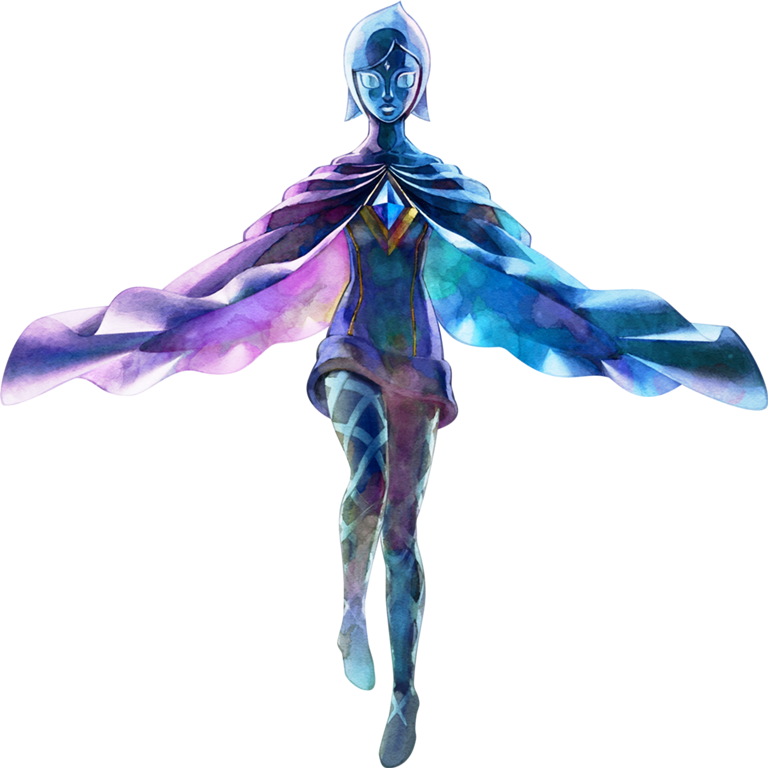
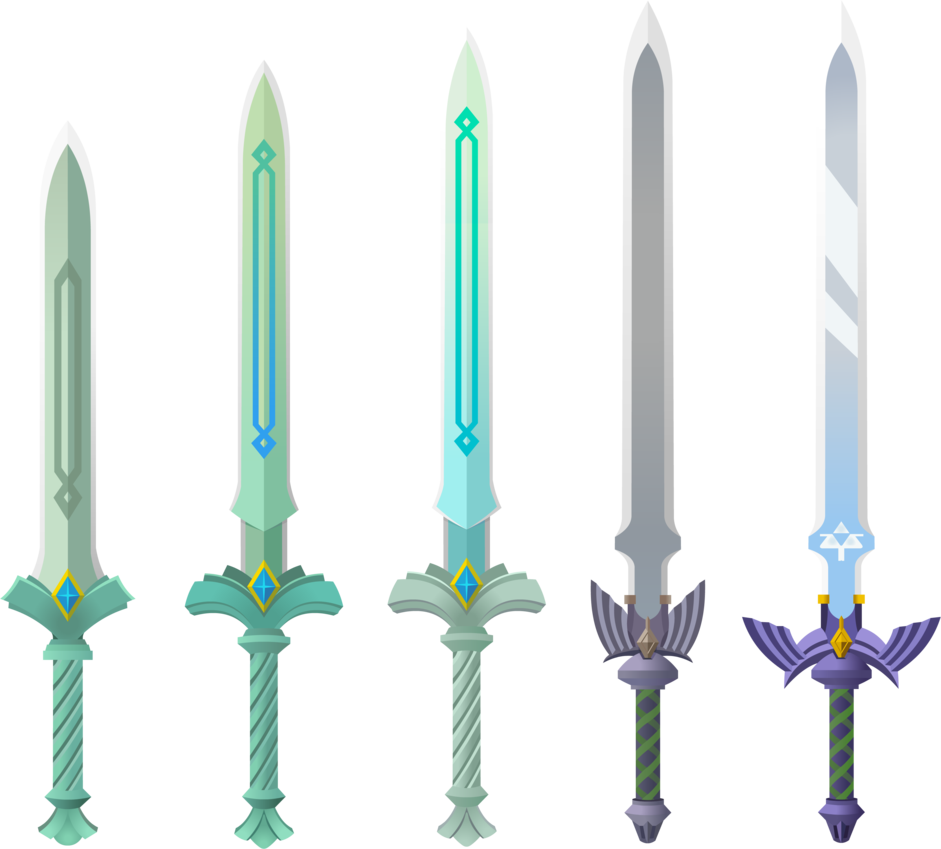

A Master Sword, também conhecida como 'Blade of Evil's Bane' é a espada criada pela Deusa Hylia com a ajuda da primeira encarnação do herói para derrotar o rei demônio Demise.
Apareceu pela primeira vez no A Link to The Past lançado em 21 de novembro de 1991, encontrado na Lost Woods depois de obter os 3 pingentes da virtude encontrados nas dungeons, pode ser reforçada 2 vezes, obtendo 4 vezes o poder da Master Sword normal.
No jogo Skyward Sword, você é encarregado de transformar a Goddess Sword criado pela Deusa Hylia na Master Sword capaz de derrotar o Rei Demônio Demise, para reforjar a Goddess Sword é necessário obter as 3 chamas divinas deixadas pelas Deusas criadoras de Hyrule, as chamas de Farore, Nayru e Din, após obter a Master Sword ela é abençoada pela própria Deusa Hylia em sua forma mortal Zelda.
Fi,é a guardiã e o espirito da Master Sword criado para ajudar o herói em sua missão para salvar o mundo, no final de Skyward Sword ela entra em uma hibernação dentro da Master Sword para eliminar os resquícios de Demise que foram selados dentro da espada, em Breath of The Wild, o último jogo lançado da série principal, é revelado que apesar de milhares de milênios terem passado o espirito de fi ainda existe dentro da espada, ajudando e guiando as inumeras reencarnações do herói.
 